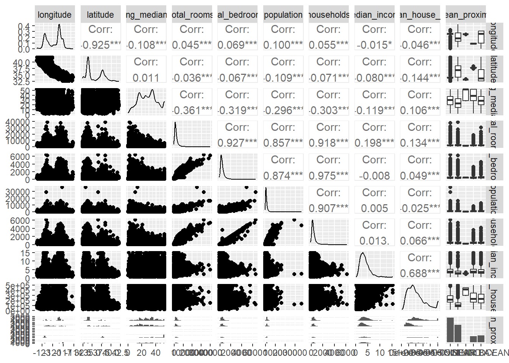

Chapter 5 Análisis exploratorio bivariado
df %>%
ggplot(aes(x = median_income,y=median_house_value))+
geom_point(alpha=0.4, color='darkblue')+
geom_smooth(method = "lm", formula = y ~ x, se = FALSE, color = "black")+
labs(y='Valor medio de la vivienda',
x= 'Ingreso medio')+
theme_bw()+
facet_grid(.~'Dispersión entre el ingreso medio y el valor de la vivienda') -> disp1 Ahora comparemos el valor medio de la vivienda según la proximidad al océano.
df %>%
group_by(ocean_proximity) %>%
summarise (n = length(median_house_value),
media = mean(median_house_value),
sd = sd(median_house_value),
mediana = median(median_house_value),
RIC = IQR(median_house_value),
Q1 = quantile(median_house_value,0.25),
Q3 = quantile(median_house_value,0.75),
minimo = min(median_house_value),
maximo = max(median_house_value),
curtosis = kurtosis(median_house_value),
asimetria = skewness(median_house_value))## # A tibble: 5 × 12
## ocean_proximity n media sd mediana RIC Q1 Q3 minimo maximo
## <chr> <int> <dbl> <dbl> <dbl> <dbl> <dbl> <dbl> <dbl> <dbl>
## 1 <1H OCEAN 9136 2.40e5 1.06e5 214850 125000 164100 289100 17500 500001
## 2 INLAND 6551 1.25e5 7.00e4 108500 71450 77500 148950 14999 500001
## 3 ISLAND 5 3.80e5 8.06e4 414700 150000 300000 450000 287500 450000
## 4 NEAR BAY 2290 2.59e5 1.23e5 233800 183200 162500 345700 22500 500001
## 5 NEAR OCEAN 2658 2.49e5 1.22e5 229450 172750 150000 322750 22500 500001
## # ℹ 2 more variables: curtosis <dbl>, asimetria <dbl>veamos un gráfico de cajas y bigotes
 ##Análisis bivariado de variable numérica vs numérica
##Análisis bivariado de variable numérica vs numérica
df %>%
ggplot(aes(x = housing_median_age,y=median_house_value))+
geom_point(alpha=0.4, color='darkblue')+
geom_smooth(method = "lm", formula = y ~ x, se = FALSE, color = "black")+
labs(y='Valor medio de la vivienda',
x= 'Edad media de la vivienda')+
theme_bw()+
facet_grid(.~'Dispersión entre el la edad promedio y el valor de la vivienda') -> disp2df %>%
ggplot(aes(x = total_rooms,y=median_house_value))+
geom_point(alpha=0.4, color='darkblue')+
geom_smooth(method = "lm", formula = y ~ x, se = FALSE, color = "black")+
labs(y='Valor medio de la vivienda',
x= 'Total de habitaciones')+
theme_bw()+
facet_grid(.~'Dispersión entre el total de habitaciones y el valor de la vivienda') -> disp3df %>%
ggplot(aes(x = total_bedrooms,y=median_house_value))+
geom_point(alpha=0.4, color='darkblue')+
geom_smooth(method = "lm", formula = y ~ x, se = FALSE, color = "black")+
labs(y='Valor medio de la vivienda',
x= 'Total de dormitorios')+
theme_bw()+
facet_grid(.~'Dispersión entre el total de dormitorios y el valor de la vivienda')-> disp4df %>%
ggplot(aes(x = population,y=median_house_value))+
geom_point(alpha=0.4, color='darkblue')+
geom_smooth(method = "lm", formula = y ~ x, se = FALSE, color = "black")+
labs(y='Valor medio de la vivienda',
x= 'Población')+
theme_bw()+
facet_grid(.~'Dispersión entre la población y el valor de la vivienda')-> disp5df %>%
ggplot(aes(x = households,y=median_house_value))+
geom_point(alpha=0.4, color='darkblue')+
geom_smooth(method = "lm", formula = y ~ x, se = FALSE, color = "black")+
labs(y='Valor medio de la vivienda',
x= 'Personas viviendo en la misma casa')+
theme_bw()+
facet_grid(.~'Dispersión entre la cantidad de personas que viven bajo el mismo techo y el valor de la vivienda')-> disp6df %>%
ggplot(aes(x = longitude,y=median_house_value))+
geom_point(alpha=0.4, color='darkblue')+
geom_smooth(method = "lm", formula = y ~ x, se = FALSE, color = "black")+
labs(y='Valor medio de la vivienda',
x= 'datos de longitud')+
theme_bw()+
facet_grid(.~'Dispersión entre la longitud y el valor de la vivienda')-> disp7df %>%
ggplot(aes(x = latitude,y=median_house_value))+
geom_point(alpha=0.4, color='darkblue')+
geom_smooth(method = "lm", formula = y ~ x, se = FALSE, color = "black")+
labs(y='Valor medio de la vivienda',
x= 'Datos de latitud')+
theme_bw()+
facet_grid(.~'Dispersión entre la latitud y el valor de la vivienda') -> disp8

5.1 Paquete GGally
## `stat_bin()` using `bins = 30`. Pick better value `binwidth`.
## `stat_bin()` using `bins = 30`. Pick better value `binwidth`.
## `stat_bin()` using `bins = 30`. Pick better value `binwidth`.
## `stat_bin()` using `bins = 30`. Pick better value `binwidth`.
## `stat_bin()` using `bins = 30`. Pick better value `binwidth`.
## `stat_bin()` using `bins = 30`. Pick better value `binwidth`.
## `stat_bin()` using `bins = 30`. Pick better value `binwidth`.
## `stat_bin()` using `bins = 30`. Pick better value `binwidth`.
## `stat_bin()` using `bins = 30`. Pick better value `binwidth`.